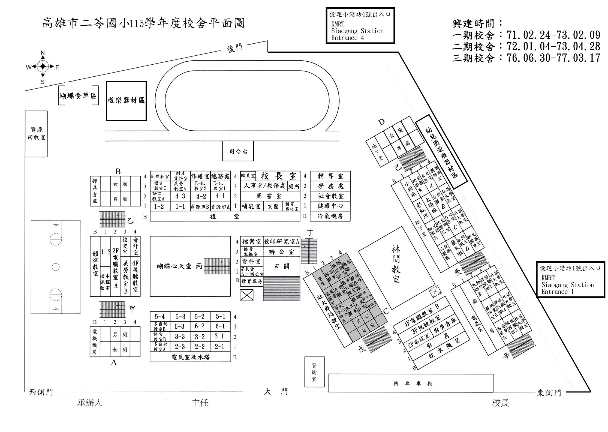

系統連線中...
請輸入通行碼
解鎖
密碼錯誤，請重試

1
/ 3
🤝 挑選比對老師 (最多4位)
請勾選要比對空堂的老師：
已選: 0/4
確定比較
高雄市小港區二苓國小115學年度課表
身份
導師
科任
群組
班級
處室
教務處
學務處
總務處
輔導室
資源班
純科任
🏀 體育課總表
名字
挑選名單
➕ 挑選老師 (0/4)
🗺️
一年1班
星期
時間
星期一
星期二
星期三
星期四
星期五